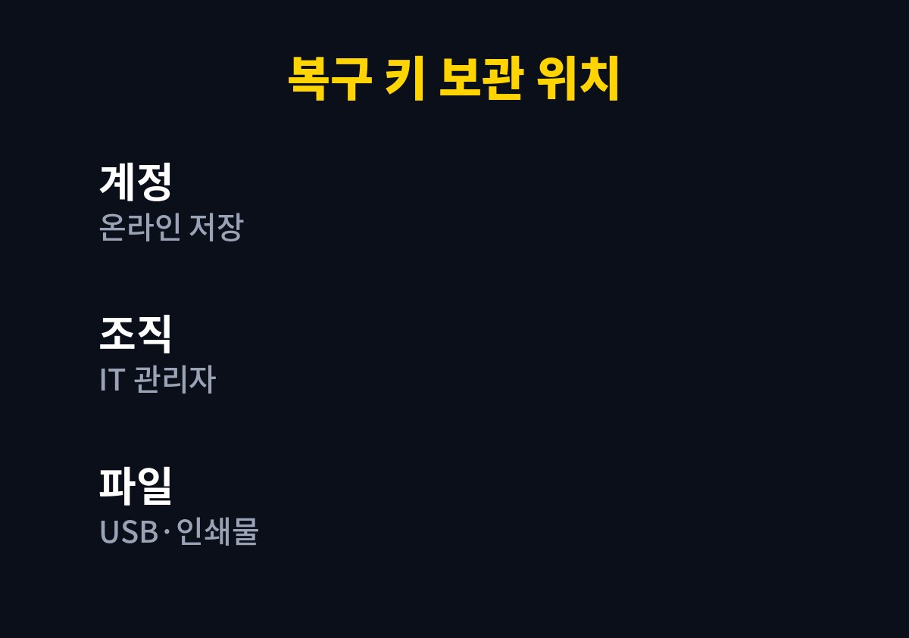
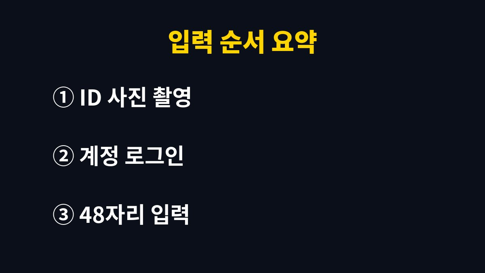

BitLocker 복구 키는 마이크로소프트 계정에 로그인하면 찾을 수 있고, 복구 화면이 떴다면 48자리 숫자를 입력해야 윈도우로 들어간다.
2026년 11월 기준 마이크로소프트 지원 안내를 바탕으로 복구 키가 저장된 위치와 확인 순서를 정리했다.
파란 화면에서 갑자기 키를 요구해도 데이터가 사라진 것은 아니다.
BitLocker는 드라이브를 암호화해 두고, 부팅 구성이나 하드웨어가 바뀐 것을 감지하면 본인 확인을 요구한다.
바이오스 업데이트 직후나 저장장치·메인보드 교체 뒤에 이 화면을 만나는 경우가 많다.
화면에는 복구 키 ID라는 문자열이 함께 보이는데, 이 ID가 나중에 맞는 키를 고르는 기준이 된다.
당황해서 전원을 반복해서 끄면 같은 화면만 계속 나온다.
복구 키 ID 앞 몇 글자를 사진으로 찍어 두고 다른 기기를 켠다.
예를 들어 바이오스를 업데이트하고 재부팅했더니 검은 화면에 숫자 입력칸이 나타난 상황이라면, 그 화면의 ID가 곧 찾아야 할 키의 이름표다.
최근에 SSD를 바꿨거나 부팅 순서를 만졌다면 원인이 거의 정해진 셈이다.
복구 키는 암호화를 켤 때 고른 저장 방식에 따라 보관 장소가 다르다.
아래 표에서 내 노트북이 어디에 해당하는지부터 본다.
윈도우 11 노트북 중에는 기기 암호화라는 이름으로 사용자가 모르는 사이에 켜져 있는 것도 있다.
이런 기기는 처음 마이크로소프트 계정으로 로그인한 순간 키가 계정에 자동 저장되는 경우가 많다.
| 저장 위치 | 확인 방법 | 해당하는 경우 |
|---|---|---|
| 마이크로소프트 계정 | 다른 기기에서 계정의 복구 키 페이지에 로그인 | 개인 PC를 계정으로 로그인해 쓴 경우 |
| 회사·학교 계정 | 조직의 IT 관리자에게 키 ID 전달 | 업무용 노트북 |
| USB 또는 파일 | 저장해 둔 USB나 텍스트 파일 열기 | 설정할 때 직접 저장을 고른 경우 |
| 인쇄물 | 종이에 적힌 48자리 숫자 확인 | 설정할 때 인쇄를 고른 경우 |


ID가 일치하지 않는 키를 넣으면 거부되므로, 이전에 쓰던 키를 시험 삼아 넣는 일은 소용이 없다.
같은 계정에 노트북이 여러 대 등록돼 있으면 키 목록이 길게 나오니 ID 앞자리 비교가 특히 중요하다.
스마트폰 화면이 작아 헷갈린다면 PC 브라우저로 여는 편이 낫다.
가족 공용 PC에서는 다른 사람의 마이크로소프트 계정으로 암호화가 켜진 경우가 있다.
키가 안 보이면 계정을 바꿔 가며 로그인해 본다.
업무용 노트북은 조직 정책으로 암호화가 관리되므로 개인 계정에는 키가 없다.
이 경우 IT 관리자에게 키 ID를 알려 주는 것만이 방법이다.
잘못된 키를 여러 번 넣다 보면 보안 정책에 따라 추가 제한이 걸릴 수도 있다.
윈도우가 열린 날 바로 키 백업 위치를 확인해 두면 다음 번 화면에서 시간을 아낀다.
나는 키를 계정에만 두지 않고 안전한 곳에 종이로도 한 장 보관하는 쪽이 낫다고 본다.
다만 종이를 책상 위에 두면 오히려 위험하니 서랍 안쪽이 낫다.
키가 어디에도 없다면 데이터 복구는 어렵다는 것이 공식 안내의 기본 입장이다.
그 전에 회사 노트북이면 IT 담당자에게, 개인 노트북이면 제조사 서비스센터에 상황을 설명하고 문의하는 것이 빠르다.
오늘 다음으로 확인할 것은 내 마이크로소프트 계정에 키가 올라와 있는지 한 번 열어 보는 일이다.
참고 자료: 마이크로소프트 지원 「BitLocker 복구 키 찾기」(2026년 11월 확인)
※ 2026년 기준 공식 안내를 바탕으로 정리한 글이며, 기기·앱 버전에 따라 메뉴 이름이 다를 수 있다.